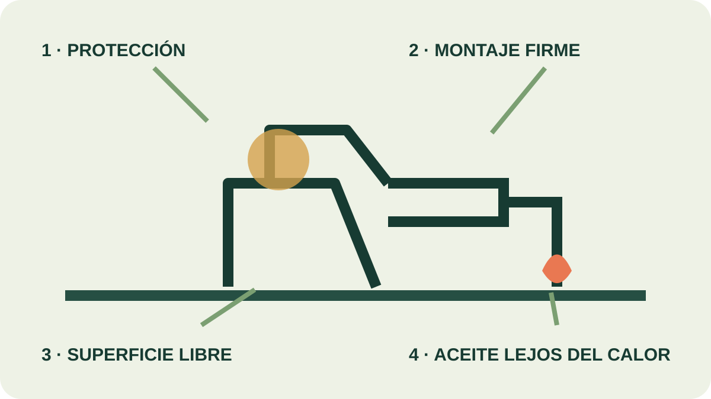

Módulo 13 · 20 minutos
Antes de encender nada: higiene y seguridad
Al terminar, vas a poder preparar un puesto de trabajo y verificar sus condiciones antes de comenzar una extracción.
La regla que parece una contradicción
En un oficio dedicado al aroma, la primera indicación del laboratorio puede sorprender: no oler. No significa renunciar al olfato, sino aprender a usarlo con criterio. Una esencia concentrada, un reactivo desconocido y una planta recién cortada no se investigan de la misma manera. Antes del perfume está el puesto de trabajo; antes del fuego, la revisión.
El riesgo no siempre se ve
Un laboratorio reúne materiales, equipos, calor, vidrio y personas que toman decisiones. Sus riesgos potenciales pueden estar ligados a materiales infecciosos, químicos o radiactivos, pero también a las instalaciones físicas. Un cable atravesando el paso, una conexión floja o un matraz mal apoyado pueden ser tan decisivos como una sustancia mal identificada.
Por eso la seguridad no es una lista aislada. Un programa completo incluye el almacenamiento, uso y eliminación de materiales riesgosos; la operación y el mantenimiento de las instalaciones; la capacitación de quienes trabajan y la . La prevención empieza antes de que algo falle.
Lo que siempre se hace
La primera familia de reglas protege la atención. Se usan ojos protegidos y ropa adecuada. Se conocen las normas para cada acción antes de realizarla. Los aparatos se revisan para comprobar que estén bien ensamblados. El se mantiene prolija y libre de elementos innecesarios.
También se permanece atento a eventualidades. Si aparece una duda, se consulta al instructor: preguntar a tiempo es parte del procedimiento. Al finalizar, se lavan las manos antes de dejar el laboratorio. Ninguno de estos gestos es decorativo; juntos forman una barrera contra errores pequeños que podrían encadenarse.
Lo que nunca se improvisa
No se fuma ni se come. No se inhalan, degustan u huelen imprudentemente reactivos o medios de cultivo. Un no se acerca directamente a la nariz. Tampoco se corre, se distrae a otras personas, se realizan experiencias no autorizadas ni se trabaja a solas.
Esta última regla importa porque, ante una rotura, una proyección o un incendio, otra persona puede cortar la fuente de calor, pedir ayuda o advertir un error que quien opera no alcanza a ver.
El aroma también puede arder
Los aceites esenciales son altamente inflamables y deben mantenerse apartados de cualquier fuente de calor. La destilación, en cambio, necesita calor. La solución no es eliminarlo sino organizarlo: el frasco de aceite se mantiene lejos; el montaje se controla; la zona permanece despejada y cada recipiente está identificado.
Un aparato mal ensamblado puede perder vapor, desestabilizarse o provocar proyecciones. Por eso se revisa pieza por pieza antes del encendido, nunca mientras el sistema ya está caliente. El sentido común es valioso, pero se vuelve confiable cuando adopta la forma de una secuencia verificable.

Leé la mesa antes de trabajar
Seguí los cuatro controles del esquema: protección personal, montaje firme, superficie despejada y aceite lejos del calor. ¿Cuál debe comprobarse antes de los demás? Señalá además un lugar donde no dejarías un cable ni un frasco.
Actividad · La lista previa al encendido
Escribí una lista de ocho comprobaciones en orden. Empezá por tu ropa y protección ocular; seguí por la superficie, el montaje, las conexiones y los recipientes; terminá con la ubicación del aceite y la presencia de otra persona. Leela como si otra persona fuera a usarla sin explicaciones: cada paso debe indicar una acción observable.
La mesa está lista
El puesto ya tiene un orden y una lógica. Ahora hay que mirar dentro del alambique: allí el agua hierve, el vapor asciende y dos líquidos que no se mezclan consiguen viajar juntos. La próxima estación explica esa aparente paradoja.
Guardá esta estación
Cuando puedas explicar la idea central con tus propias palabras, marcá el módulo como completado.